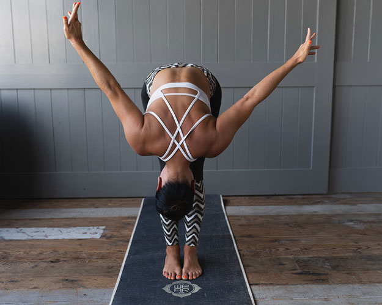
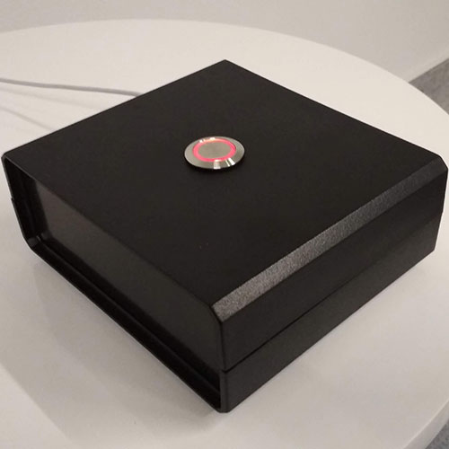

Programátori sedia. Celý deň. Roprávajú sa sediac. Poradujú sediac. A keď hrozí že sa majú ísť spýtať niečo marketingov, tak im napíšu. Sediac.
Sú najrizikovejší druh Martinusákov. 36%* Martinusáckych programátorov trpí problémami chrbtice. Preto sme sa rozhodli podporiť ich zdravie.
Martinusácky programátori vypúšťajú zmeny na produkciu (tzv. deploy) približne 30x za deň. Sediac. Cez príkazový riadok. Ale tomu je koniec! Prichádza..
Diploj
Tlačidlo so funkciou deploy kódu na server precvičuje chrbové svalstvo a predchádza vysunutým platničkám.
Ako?
1. Nadýchni sa. A vstaň.
2. Hýb sa. Cestou.

3. Stlač.

Hotovo.
Nová verzia webu je vonku a tvoje platničky sa potešia.
Diploj schvaľuje 9 z 10* fyzioterapeutov.